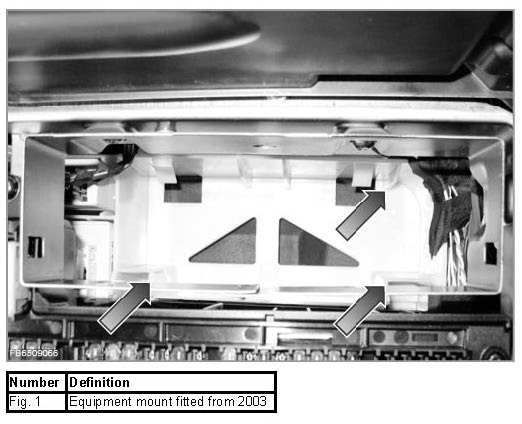
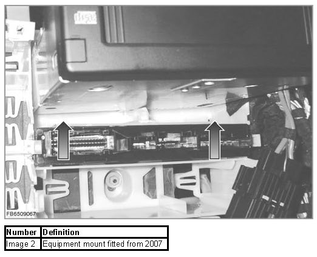
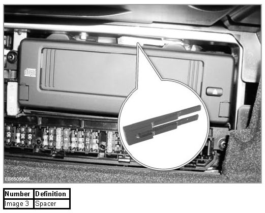

CD Changer Audio / Video (CDC/ DVDC)
CD Changer Audio / Video (CDC/ DVDC)
The CD changer is a separate control unit in the MOST network. The requests for the particular functions can be issued by various control units.
Brief component description
CD changer Audio / Video
The Audio CD changer serves to automatically play individual CDs or several CDs in succession. The order in which the CDs or the tracks on the CDs are to be played can be freely selected.
Control display (CD) and controller
Control Display: With a few exceptions, the Control Display (CD) incorporates the controls and display elements for all vehicle functions; it is activated by the CCC. The CCC coordinates the function requests from the system and assigns them to the relevant functions.
Controller: The CCC is operated by means of the controller located on the front centre armrest.
Audio System Controller (ASK)
The Audio System Controller (ASK) is integrated in the radio/M-ASK/CCC.
MOST bus
The MOST (Media Oriented Systems Transport) bus links the audio, video and navigation components. Information relating to function requests is transmitted to the relevant control units by means of MOST bus messages.
Main CD-changer functions
Mounting/damping
To achieve the desired sound reproduction quality, the CD changer's playback mechanism is spring-mounted. During normal driving, shocks are adequately damped in order to balance out road-surface irregularities. For the improvement of quality, the CD changer is also fitted with an electronic correction device.
In the case of extremely hard suspensions or at high speeds, vibrations can occur which will cause the playback mechanism to come into contact with the housing. The electronic correction device cannot compensate for such flaws and there will be a resulting reduction in quality.
Playback
When a CD is played, the digital information is read by a laser beam in the CD changer. The optical signals are converted into audio signals and forwarded to the Audio System Controller. The CD changer's drive only contains the CD which is actually being played at that moment. Further CDs are stored in a magazine outside the CD changer.
change
- In the CD changing operation, the CD to be played next is removed from the magazine by two rubber rollers and placed in the playback position.
- The position of the CD inside the mechanism is detected by three photoelectric beams in the CD change The order in which these beams are interrupted indicates the precise position of the CD.
- Once the CD has reached the playback position, it is lowered and its centre hole located on a taper (clamped). Playback begins once the CD has been located in position.
- The CD is transported back into the magazine in the reverse order.
Muting
The "mute" function mutes playback by the CD changer or reduces the audio volume. It may also stop the drive.
The "mute" function is activated by the ASK on the basis of the following prioritization:
1. Telephone
2. Traffic report
3. Navigation system announcements
4. Radio /CD, TV, etc. playback
Service functions
Some complaints cannot be put down to CD changers that are not working properly. Such complaints may be caused by poor-quality CDs or external effects on CDs.
Malfunctions caused by poor-quality or damaged CDs
Due to the particular conditions under which a CD changer operates in mobile applications, CDs which are outside or right at the limit of the manufacturing tolerance can give rise to problems when they are played. Causes may be:
Inadequately deburred edges:
- If the outer edge and/or the inner edge is/are inadequately deburred, plastic burrs can become detached during transport through the rollers. These plastic burrs can adhere to the CD surface.
- If plastic burrs are indeed present, they can be pressed out when the CD is transported through the rollers and/or when it is located on the taper (clamped). The burrs will get into the mechanism, foul CDs and the magazine and thereby cause malfunctions.
- The presence of plastic burrs will result in fine scratches on the surface of the CD if the pieces of plastic get into the magazine. Under unfavorable conditions, larger pieces of plastic (5-7 mm) can cause scanning faults (jumping) or they may render the CD table of contents (TOC) unreadable.
CD too thick:
- If the CDs are too thick, the transport rollers may not be able to grip the CDs or grip them properly.
- If several CDs in the magazine are too thick, return of CDs to the magazine is made difficult. Greater force is needed to transport CDs that are too thick.
- If the CDs are too thick, the dividers between the individual CD compartments may also be displaced. This means that return of a CD to its original position will not be possible.
NOTE: Do not use CDs which are inadequately deburred. Extremely thick CDs may be used only if there are not several such CDs in the same magazine.
Problems caused by single CDs (8 cm) with single adapter/protective film/protective coating/stabilizer rings
- CDs with the features mentioned are thicker than normal CDs.
- Singles may come apart from the adapter while being transported and thus jam the mechanism.
- Stabilizer rings can get trapped in the transport rollers.
NOTE: Do not use such CDs in the vehicle CD changer.
Faults with transparent CDs
If the protective coating has been inadequately vapor-deposited on the CDs, the CDs in question will be more transparent than usual in parts or as a whole. Although they can still be played, they no longer enable optical position monitoring by the photoelectric beams. Consequently, the CD cannot be detected.
Manufacturing defects
CDs may have manufacturing defects on the layer on which the digital information is recorded. Such CDs cannot be played in the vehicle.
In the event of faulty playback, there is no fault in the CD changer. Because of the vibrations that occur, other demands are made on fault correction in the vehicle than in stationary operation.
In mobile applications, the control range of the laser tracking must therefore be limited in its capacity to compensate for surface flaws.
Warpage
Very occasionally, CDs may not be completely flat, i.e. they may be warped or buckled. With such CDs, electronic fault correction may no longer be able to compensate for the defect when the last track is played. When played, CDs are read from inside to outside. Because warpage is at its greatest at the outer edge, there may be reduced reproduction quality at this point.
Faulty "Eject" function
In the event of a faulty Eject function, the magazine and the inserted CD cannot be removed from the unit. Send the unit in to be repaired.
Checking CD changer for scanning faults
Checking with vehicle stationary:
- Check CDs for dirt and/or scratches.
- If the CDs are in perfect order and function satisfactorily in other CD players, send the CD changer back to the factory for inspection.
- If necessary, enclose the CDs that cannot be played and a brief description of the fault: "No playback as of track 5, 1:34 minutes".
Checking while driving:
- Check CDs for dirt and/or scratches. Dirty CDs can increase the player's sensitivity to vibration and shocks.
- Check whether the transport screws have been removed.
- Check whether the position of the bearing springs is correct.
- Check whether the springs are in the same position on both sides.
Additional information for diagnosis on E6x
Additional images for testing procedure AT6512_CDCMAG


